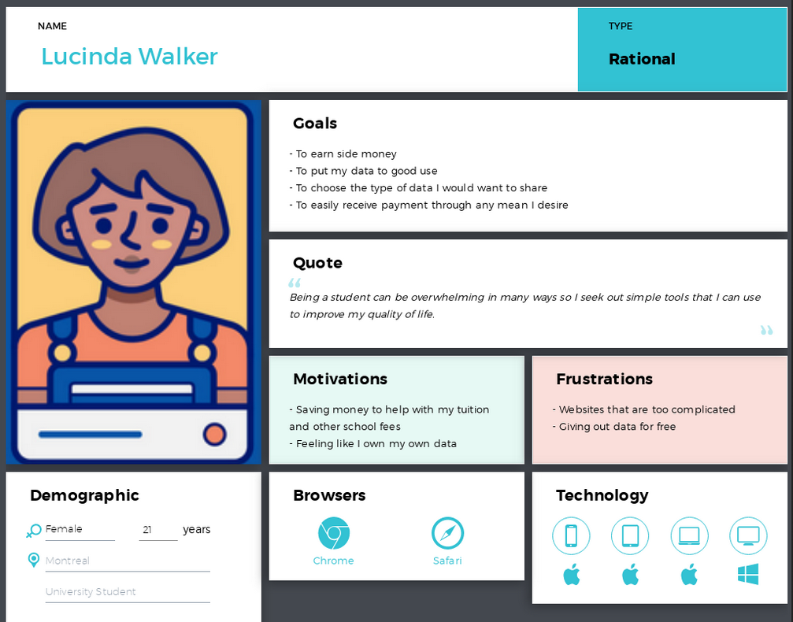

Introduction
With the increasing prevalence of IoT and AI, the need and value of data are at an all-time high. More than ever, companies are feeding off user
information in order to gain insight and make decisions which will increase their revenue.
What is not widely known is that this data, which is shown to have actual monetary value to many companies, is either given away during opt-in
license agreements or simply not used at all.


 What users are lacking is the ressources that will allow them to decide how take control of their data.
What users are lacking is the ressources that will allow them to decide how take control of their data.
Our challenge
Users unkowingly opt-in to provide personal data on daily basis when using the platforms and tools scattered over the internet when they could
potentially be selling this data at a higher price.
YOUR demographic data, social data, financial data, health data has a monetary value therefore
it is crucial to start taking control of your personal data and who can gain access to it.
 This is where FreeYourData comes into play.
This is where FreeYourData comes into play.
Our solution
FreeYourData is a online data marketplace where uses can go to in order to sell their data in return for monetary compensation. The online marketplace platform will allow for users to browse data categories and allow them to chose which data they wish to provide. While sales prices for different types of data will be suggested by FreeYourData, the platform will allow it's users the freedom to set their data to the desired sales price.
Understanding our users
The survey
Through the use of a survey we have written, we were able to extract relevant data about potential users which allowed us to learn about their specific needs and their feelings towards an online marketplace. To maximize the efficiency of our research, we start off the survey by asking demopgrahic type questions which will come in handy when trying to generate personas or when simply trying to picture potential users and their characteristics. The following questions allowed us to gain more understanding about our users in terms of awareness of the value their data, their level of comfort associated with selling personal data, and their likeliness to different categories of personal data.
Representing the user
The data collected from the survey demonstrated that a wide demographic of users were interested in participating in data marketplace to varying degrees. The next step was to generate users personas which could act as great examples of potential users of the FreeYourData platform. We decided to go with 3 personas as this would allow us to have one persona ressemble the average user (based on our survey) and two personas to represent outlier users. We generate 3 different personas to demonstrate demographic range but ultimately we will focus on one persona to demonstrate user flow and journey.
Our user personas
Lucinda Walker, a 21 year old University student from Montreal
Jeffrey Star, a 24 year old freelance web developer from Montreal

Jeffrey's journey
We generated a User Journey Map in order to demonstrate the user's journey in terms of our main user persona's goals, processes, problems, experience, ideas, and opportunities.
The following map describes the journey of Jeffrey which begins with the realization that his bank account funds are not accruing at a rate which he deems acceptable.
Annoyed by this, he decides to use FreeYourData in order to make some extra money.
He is interested by the current offers which are available ont he application and is filled with joy when he finally decides to sell his health data.
Finally, Jeffrey goes through a feeling of serenity knowing that he is making progress in terms of his financial standing.